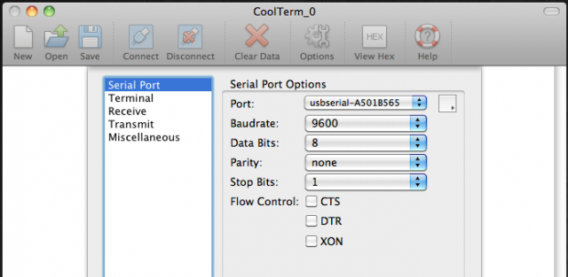
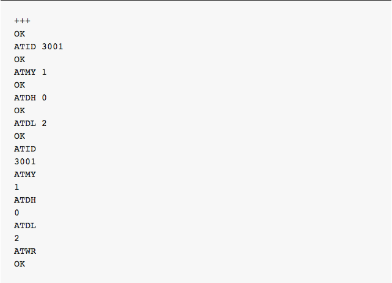
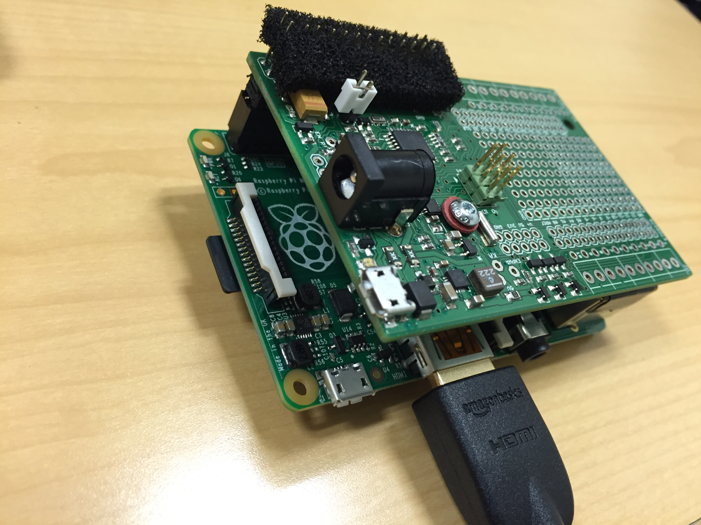
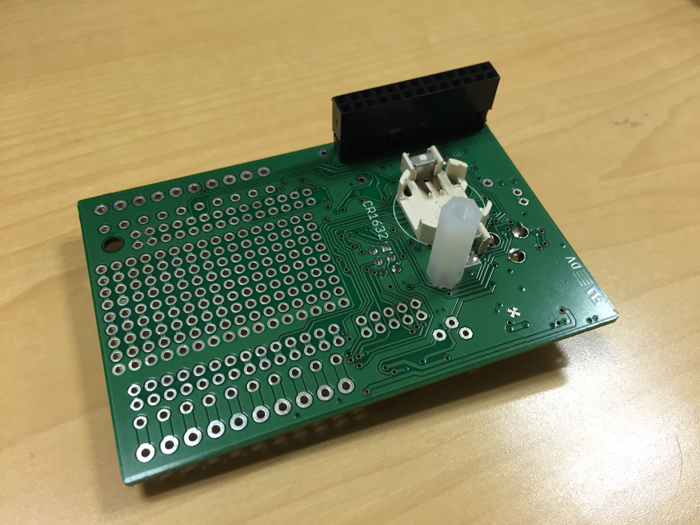
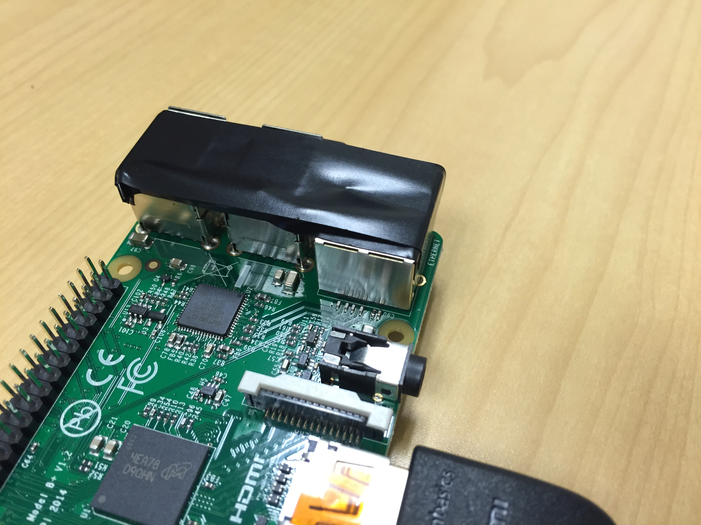

Hardware Preparation
In order to begin installing Wadi Drone components you must prepare the hardware and install all the necessary prerequisites.
Raspberry Pi
This guide uses Raspberry Pi with Raspbian installed. ‘Noobs’ is the easiest way to install Raspbian on Raspberry Pi. Use the following link for a set up guide on how to install Raspbian using "Noobs". An SD Card of 8GB or more is recommended.
When the installation process is complete the Raspberry Pi configuration menu appears. It is not necessary to configure anything specific to Wadi Drone at this point. Click Finish and the terminal comes up.
In the terminal enter startx to open GUI mode of the operating system. From here open Menu > Preferences > WiFi Configure to connect to wifi. Make sure your USB Wifi module for Raspberry Pi is connected to one of the USB ports. Alternatively, use an Ethernet cable to connect to the internet.
It’s a good idea to ensure that your Raspbian is up to date by opening up an LXTerminal window and executing the following:
$ sudo apt-get update
$ sudo apt-get dist-upgrade
XBee
The two Xbees must be pre-configured to communicate with each other. The following guide worked well with the Xbees used in the prototype. The Xbees can be configured from any computer.
Below is a brief summary of the guide.
- Download CoolTerm by Roger Meier. Below is the standard CoolTerm GUI window.

-
After opening CoolTerm click "Options".
-
Choose the serial port that starts with "usbserial". If you cannot see the serial port, click on "Re-Scan Serial Ports." If you’re not sure which serial port to select, look at the list of available ports and then disconnect the XBee Explorer from your computer. Click “Re-Scan Serial Ports” and check which serial port disappeared. Reconnect your XBee Explorer, click “Re-Scan Serial Ports” and choose that port.
-
Be sure Baudrate is set to 9600.
-
Be sure Data Bits is set to 8.
-
Be sure Parity is set to "none".
-
Be sure Stop Bits is set to 1.
-
In the list on the left side of the options window, click “Terminal”.
-
Be sure “Local Echo” is activated. This will allow you to see what you’re typing into the terminal.
-
Click OK to save those settings and close the Options window.
-
Click "Connect" in the toolbar.
-
You should see "Connected" in the status bar at the bottom of the window.
-
Type "+++" to enter command mode. You should see the reply "OK". Below are the settings that we use.
| Function | Command | Parameter |
|---|---|---|
| PAN ID | ATID |
3001 (any address from 0 to FFFE will do) |
| MY Address | ATMY |
1 |
| Destination address high | ATDH |
0 (indicates 1 16-bit address) |
| Destination address low | ATDL |
2 |
-
Type in each command followed by its parameter and hit enter. If the XBee does not respond, it might have timed out, so just type "+++" and start all over again.
-
You can verify the setting by typing the command without a parameter.
-
Your settings aren’t saved yet! Type
ATWRto save the settings. -
Here’s how the terminal session will look, starting with the “+++” to enter command mode. Note that in the second half of the session, we check what the settings are and then we confirm the changes with
ATWR.

-
Now you can configure the second XBee. Mark the second Xbee with a "B".
-
Place the XBee into the XBee Explorer and click “Connect” in CoolTerm.
-
Follow the same steps as before to program the second radio. However, ATMY gets 2 and the ATDL gets 1. See the chart below.
| Function | Command | Parameter |
|---|---|---|
| PAN ID | ATID |
3001 (any address from 0 to FFFE will do) |
| MY Address | ATMY |
2 |
| Destination address high | ATDH |
0 (indicates 1 16-bit address) |
| Destination address low | ATDL |
1 |
-
Remember to type
ATWRand press enter to save the settings. -
Here's a sample of what a terminal looks like after taking these steps.
Sleepy Pi
The transmission device connected to the camera trap requires Sleepy Pi for reducing power consumption. Sleepy Pi sits on top of the Raspberry Pi B+ as shown in the photo below.

The Sleepy Pi does not need a coin cell battery because we are not using Sleepy Pi's clock in the current version of the system.

You should put electric tape on the connectors of the Raspberry Pi to avoid short-circuiting Sleepy Pi. In general, Sleepy Pi is liable to short circuits, which can destroy the piece of hardware, so you should exert extra caution when working with the board.
